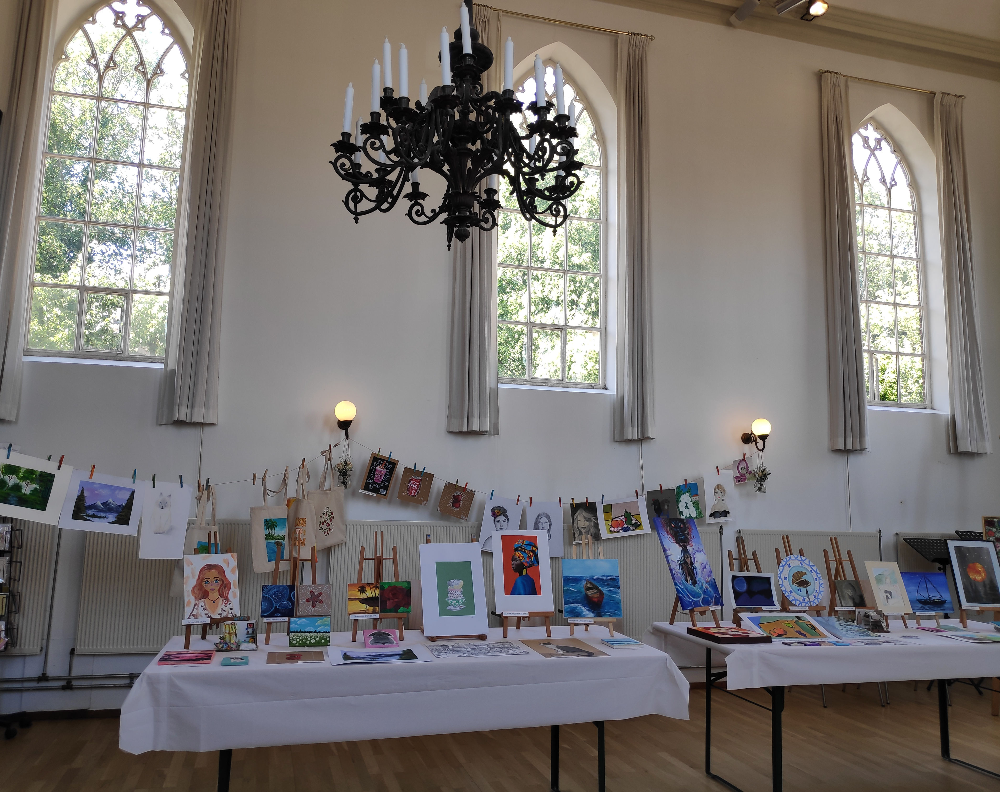
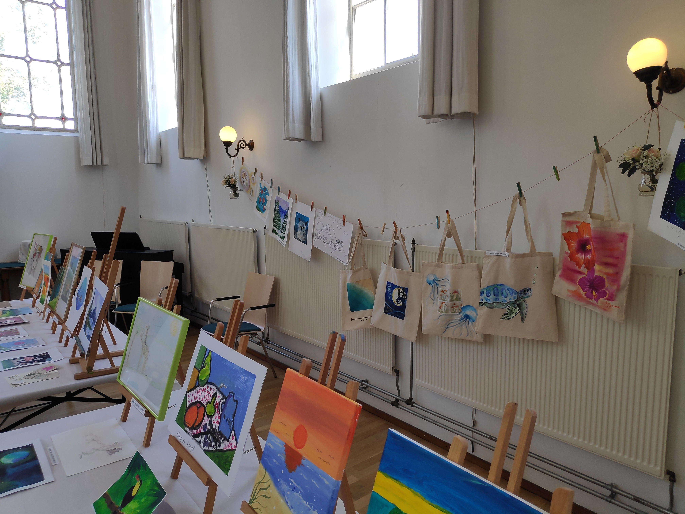
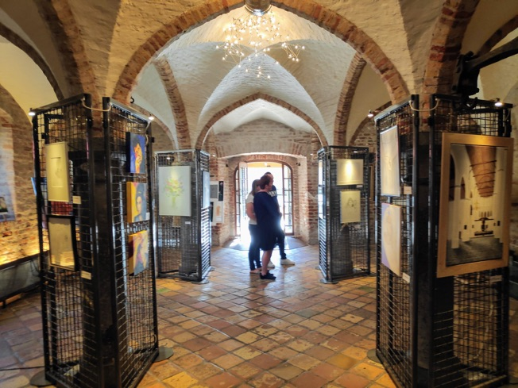
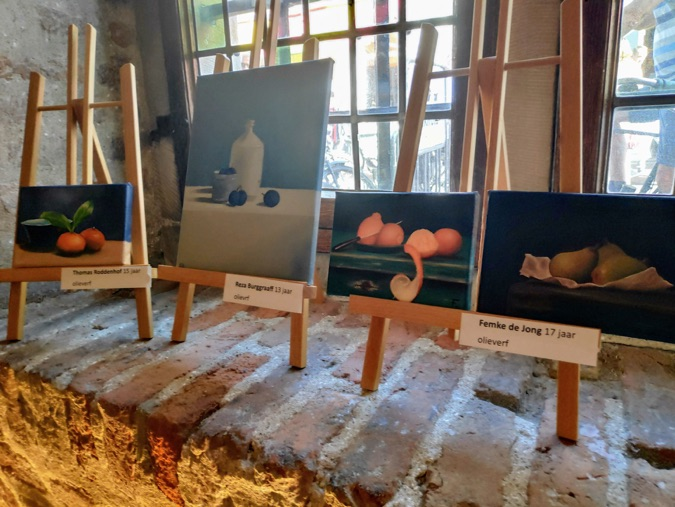
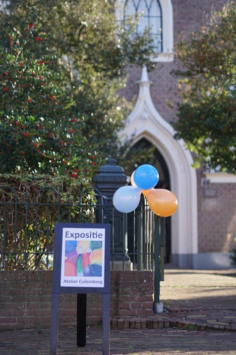
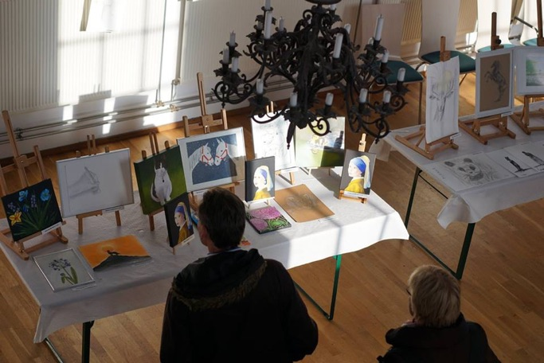
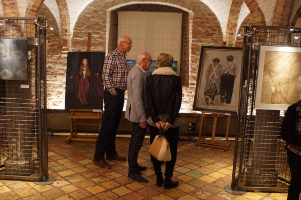
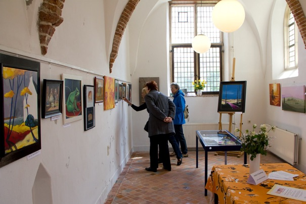

Expositie kinderen en jongeren van Atelier Culemborg, Juli 2024
Expositie kinderen en jongeren van Atelier Culemborg, Juli 2024


Expositie van volwassenen en jongeren in het oude stadhuis in Culemborg, November 2018


Expositie van kinderen en jongeren,
November 2016


Expositie in het oude Stadshuis in Culemborg,
November 2015

Exposities in de openbare bibliotheek van Culemborg, 2013
